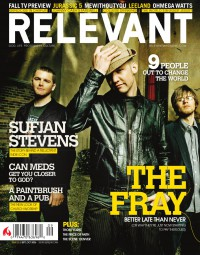

CMnexus: Contemporary Christian culture, music, and media.
|
|
Relevant, Sep / Oct 2006, #22
| Cover |
|---|
|  | | Writers in this Issue |
|---|
Brandon, John
Burrows, Fred
Carey, Jesse
Clark, Tyler L.
Esposito, Benjamin
Hunt, Jeremy
Lawrence, Cameron
Maurer, Aaron
Orendorf, Josh
Owens, Jeremy
Smith, Adam
Smith, Brian A.
Steele, Mark
Troutman, Chris
Worthen, Jeff
|
Cover Feature:
- "Unraveling The Fray" by Jeremy Hunt
Article:
- "Looking For Truth and Carpe Diem" by Jesse Carey
- "God Bless The Sufjan Stevens" by Cameron Lawrence
- MeWithoutYou by Jeff Worthen
Spotlight:Music Reviews:Book Review:Relevant LinksFor more information about Relevant, or to subscribe, visit their web site. You may be able to find Relevant in a library near you: check Worldcat |